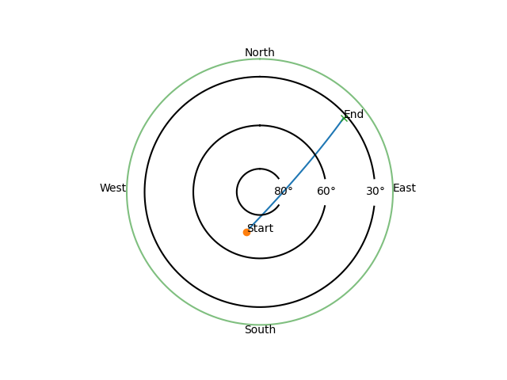

Note
Click here to download the full example code
Estimating orbit determination errors¶

Out:
Orbit:
a : 7.2000e+06 x : -1.3110e+06
e : 1.0000e-02 y : 2.5142e+06
i : 7.5000e+01 z : 6.5932e+06
omega: 0.0000e+00 vx: -1.9534e+03
Omega: 7.9000e+01 vy: -6.8295e+03
anom : 7.2000e+01 vz: 2.2929e+03
Temporal points: 8640
Using "data/" as cache for LinearizedCoded errors.
Range errors std [m] (rx=0):
[25.69644429 24.93826816 24.85680731 25.45809801 26.69536743 28.48503247
30.72978064 33.33679997 36.22695329 39.33693941]
Velocity errors std [m/s] (rx=0):
[0.06433315 0.06433315 0.06433315 0.06433315 0.06433315 0.06433315
0.06433315 0.06433315 0.06433315 0.06433315]
Range errors std [m] (rx=1):
[25.56794196 24.83707392 24.78566159 25.4173372 26.68293693 28.49728925
30.76250055 33.38591731 36.28892537 39.40884473]
Velocity errors std [m/s] (rx=1):
[0.06433315 0.06433315 0.06433315 0.06433315 0.06433315 0.06433315
0.06433315 0.06433315 0.06433315 0.06433315]
Range errors std [m] (rx=2):
[25.23816471 24.77295342 24.99140657 25.87580343 27.36183698 29.35849884
31.76944268 34.50733482 37.49976186]
Velocity errors std [m/s] (rx=2):
[0.06433315 0.06433315 0.06433315 0.06433315 0.06433315 0.06433315
0.06433315 0.06433315 0.06433315]
Measurement Jacobian size
(58, 7)
--------------------------------------- Performance analysis --------------------------------------
Name | Executions | Mean time | Total time
--------------------------------------------------------+--------------+---------------+--------------
Obs.Param.:calculate_observation:get_state | 24 | 1.43105e-02 s | 62.74 %
Obs.Param.:calculate_observation:enus,range,range_rate | 24 | 3.14752e-04 s | 1.38 %
Obs.Param.:calculate_observation:snr-step:gain | 29 | 5.32851e-03 s | 28.23 %
Obs.Param.:calculate_observation:snr-step:snr | 29 | 2.83225e-05 s | 0.15 %
Obs.Param.:calculate_observation:snr-step | 29 | 5.37945e-03 s | 28.50 %
Obs.Param.:calculate_observation:generator | 24 | 7.19373e-03 s | 31.54 %
Obs.Param.:calculate_observation | 24 | 2.18743e-02 s | 95.90 %
Obs.Param.:calculate_observation_jacobian:reference | 3 | 7.71430e-02 s | 42.27 %
Obs.Param.:calculate_observation_jacobian:d_x | 3 | 1.50725e-02 s | 8.26 %
Obs.Param.:calculate_observation_jacobian:d_y | 3 | 1.48211e-02 s | 8.12 %
Obs.Param.:calculate_observation_jacobian:d_z | 3 | 1.46537e-02 s | 8.03 %
Obs.Param.:calculate_observation_jacobian:d_vx | 3 | 1.48489e-02 s | 8.14 %
Obs.Param.:calculate_observation_jacobian:d_vy | 3 | 1.46714e-02 s | 8.04 %
Obs.Param.:calculate_observation_jacobian:d_vz | 3 | 1.49150e-02 s | 8.17 %
Obs.Param.:calculate_observation_jacobian:d_A | 3 | 1.44629e-02 s | 7.93 %
Obs.Param.:calculate_observation_jacobian | 3 | 1.80696e-01 s | 99.02 %
total | 1 | 5.47452e-01 s | 100.00 %
---------------------------------------------------------------------------------------------------
Linear orbit estimator covariance [SI-units] (shape=(7, 7)):
x y z vx vy vz log10(A)
-------- ----------- ----------- ----------- ----------- ----------- ----------- -----------
x 2970.88 -223.151 834.029 1.10292 0.280918 2.80229 0.271511
y -223.151 460.979 -407.58 -1.55113 1.20832 3.79063 0.365525
z 834.029 -407.58 513.768 1.47674 -0.921137 -2.34528 -0.16359
vx 1.10292 -1.55113 1.47674 0.0634414 -0.0134914 0.00775974 -0.00198313
vy 0.280918 1.20832 -0.921137 -0.0134914 0.00522475 0.00821788 -0.00138146
vz 2.80229 3.79063 -2.34528 0.00775974 0.00821788 0.0457124 0.00532857
log10(A) 0.271511 0.365525 -0.16359 -0.00198313 -0.00138146 0.00532857 0.345528
import pathlib
import numpy as np
import matplotlib.pyplot as plt
from astropy.time import Time
from tabulate import tabulate
import pyorb
import sorts.propagator as propagators
import sorts.errors as errors
import sorts
radar = sorts.radars.eiscat3d
try:
pth = pathlib.Path(__file__).parent / 'data'
except NameError:
import os
pth = 'data' + os.path.sep
dt = 10.0
end_t = 3600.0*24.0
orb = pyorb.Orbit(
M0 = pyorb.M_earth,
direct_update=True,
auto_update=True,
degrees=True,
a=7200e3,
e=0.01,
i=75,
omega=0,
Omega=79,
anom=72,
)
obj = sorts.SpaceObject(
propagators.SGP4,
propagator_options = dict(
settings = dict(
in_frame='TEME',
out_frame='ITRS',
),
),
state = orb,
epoch=Time(53005.0, format='mjd', scale='utc'),
parameters = dict(
A = 1.0,
)
)
t = np.arange(0.0, end_t, dt)
print(f'Orbit:\n{str(orb)}')
print(f'Temporal points: {len(t)}')
states = obj.get_state(t)
passes = radar.find_passes(t, states)
#Create a list the same pass at the other rx stations
#in this example we know that its index 0 at all of them and that it was tri-static
#(otherwise it is simple to find the other passes from this structure)
rx_passes = [p_tx0_rx[0] for p_tx0_rx in passes[0]]
#choose the tx0-rx0 one
ps = rx_passes[0]
#Measure 10 points along pass
use_inds = np.arange(0,len(ps.inds),len(ps.inds)//10)
#Create a radar controller to track the object
track = sorts.controller.Tracker(radar = radar, t=t[ps.inds[use_inds]], ecefs=states[:3,ps.inds[use_inds]])
track.meta['target'] = 'Cool object 1'
class Schedule(
sorts.scheduler.StaticList,
sorts.scheduler.ObservedParameters,
):
pass
p = sorts.Profiler()
p.start('total')
sched = Schedule(radar = radar, controllers=[track], profiler=p)
try:
pth = pathlib.Path(__file__).parent / 'data'
except NameError:
import os
pth = 'data' + os.path.sep
#Now we load the error model
print(f'\nUsing "{pth}" as cache for LinearizedCoded errors.')
err = errors.LinearizedCodedIonospheric(radar.tx[0], seed=123, cache_folder=pth)
variables = ['x','y','z','vx','vy','vz','A']
deltas = [1e-4]*3 + [1e-6]*3 + [1e-2]
#observe one pass from all rx stations, including measurement Jacobian
for rxi in range(len(radar.rx)):
#the Jacobean is stacked as [r_measurements, v_measurements]^T so we stack the measurement covariance equally
data, J_rx = sched.calculate_observation_jacobian(
rx_passes[rxi],
space_object=obj,
variables=variables,
deltas=deltas,
snr_limit=True,
transforms = {
'A': (lambda A: np.log10(A), lambda Ainv: 10.0**Ainv),
},
)
#now we get the expected standard deviations
r_stds_tx = err.range_std(data['range'], data['snr'])
v_stds_tx = err.range_rate_std(data['snr'])
#Assume uncorrelated errors = diagonal covariance matrix
Sigma_m_diag_tx = np.r_[r_stds_tx**2, v_stds_tx**2]
#we simply append the results on top of each other for each station
if rxi > 0:
J = np.append(J, J_rx, axis=0)
Sigma_m_diag = np.append(Sigma_m_diag, Sigma_m_diag_tx, axis=0)
else:
J = J_rx
Sigma_m_diag = Sigma_m_diag_tx
print(f'Range errors std [m] (rx={rxi}):')
print(r_stds_tx)
print(f'Velocity errors std [m/s] (rx={rxi}):')
print(v_stds_tx)
#Add a prior to the Area
Sigma_p_inv = np.zeros((len(variables), len(variables)), dtype=np.float64)
Sigma_p_inv[-1,-1] = 1.0/0.59**2
#diagonal matrix inverse is just element wise inverse of the diagonal
Sigma_m_inv = np.diag(1.0/Sigma_m_diag)
#For a thorough derivation of this formula:
#see Fisher Information Matrix of a MLE with Gaussian errors and a Linearized measurement model
Sigma_orb = np.linalg.inv(np.transpose(J) @ Sigma_m_inv @ J + Sigma_p_inv)
print('Measurement Jacobian size')
print(J.shape)
p.stop('total')
print('\n'+p.fmt(normalize='total'))
print(f'\nLinear orbit estimator covariance [SI-units] (shape={Sigma_orb.shape}):')
header = ['']+variables
header[-1] = 'log10(A)'
list_sig = (Sigma_orb).tolist()
list_sig = [[var] + row for row,var in zip(list_sig, header[1:])]
print(tabulate(list_sig, header, tablefmt="simple"))
ax = sorts.plotting.local_passes([ps])
plt.show()
Total running time of the script: ( 0 minutes 0.818 seconds)